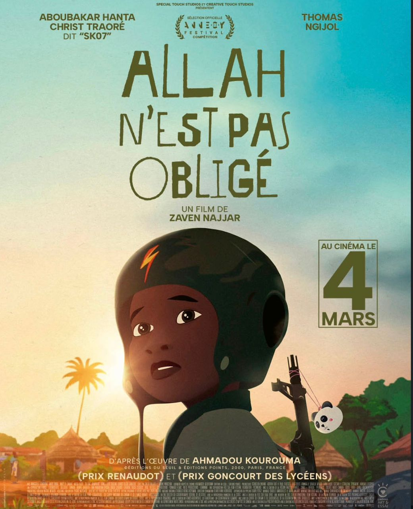
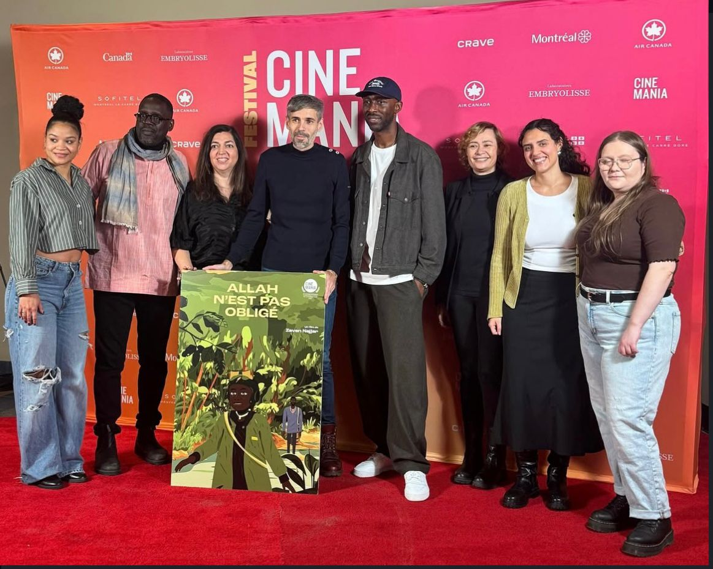
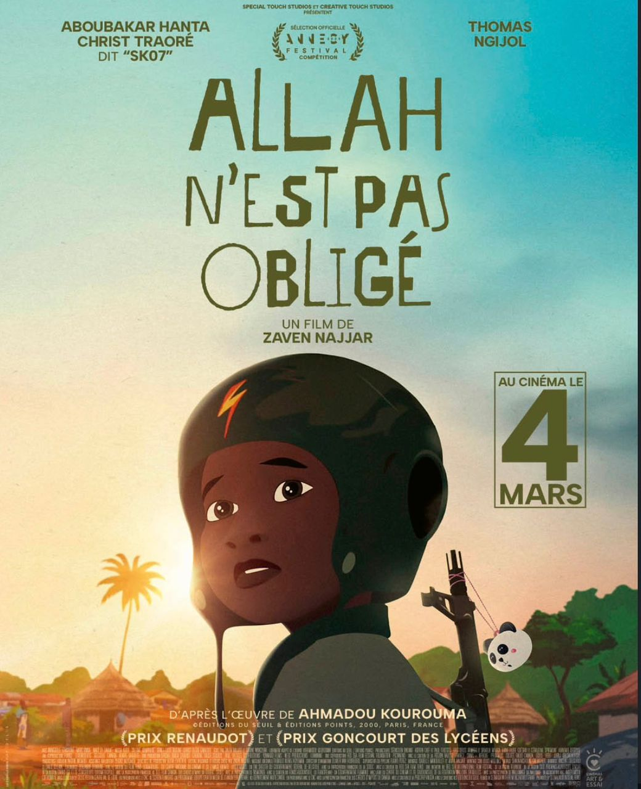
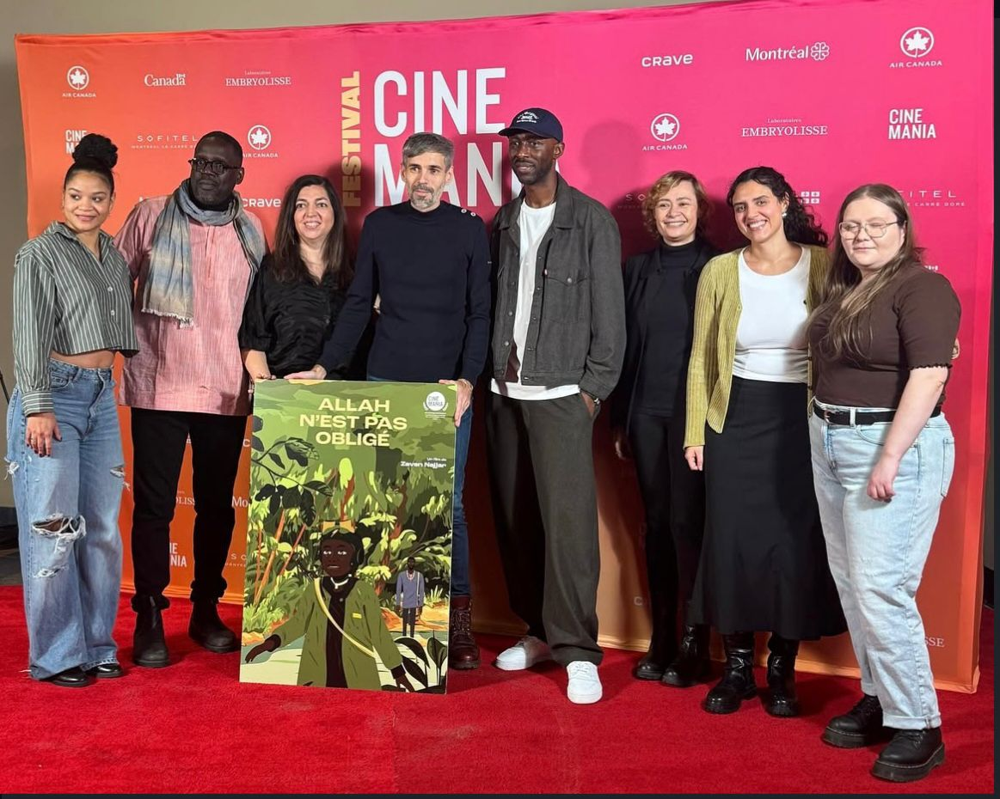
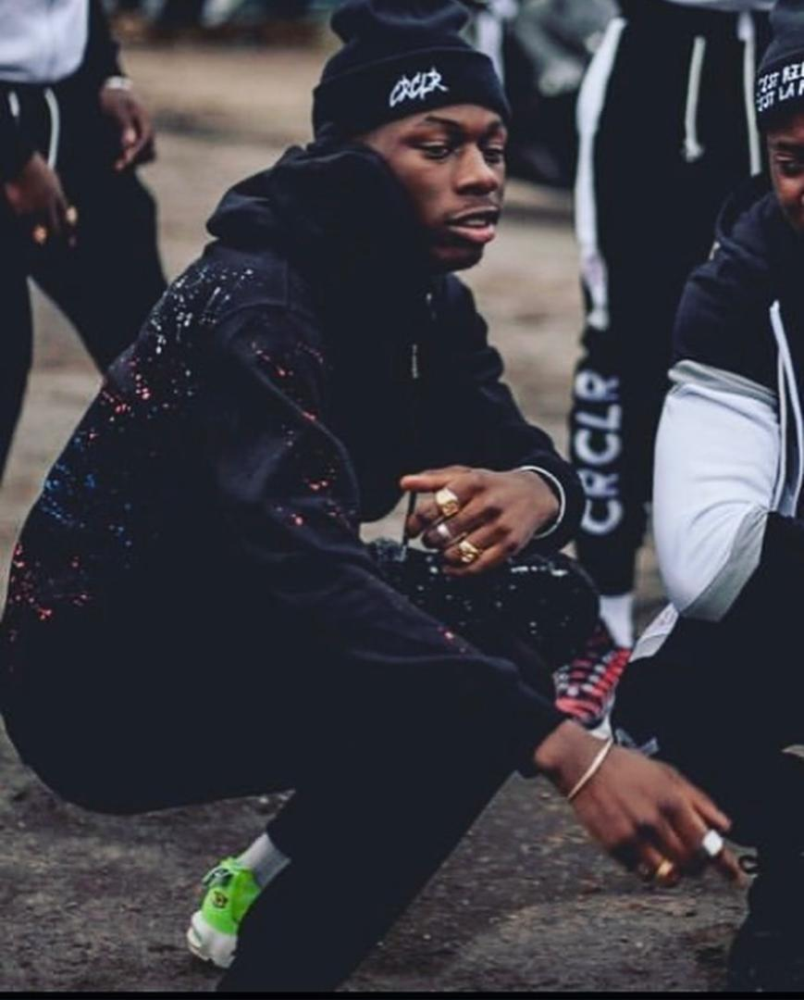
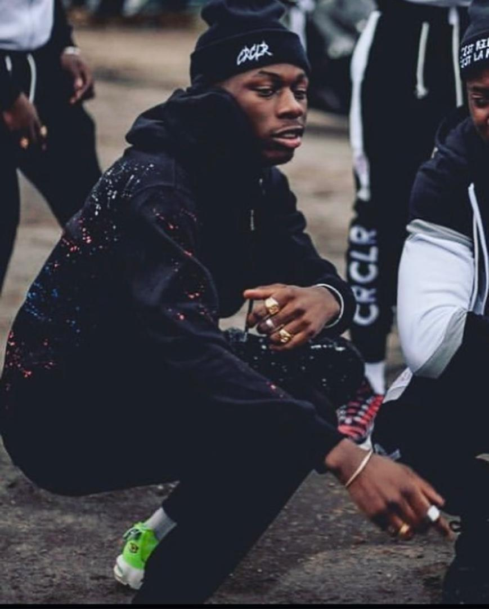

Hello, je suis
SULTAN OUMAR
Digital Creator & Vibe Coder
Transformant vos idées en expériences numériques.
IA Digital Creator | Développeur Web & Vibe Coder | DA & Strategic Brand Manager | Community Manager
| Graphiste | Monteur Vidéo
À Propos
Je suis IA Digital Creator.
J’explore les frontières entre intelligence artificielle et imagination humaine pour
transformer des idées en expériences digitales vivantes.
Développeur Web & Vibe Coder, je ne crée pas seulement des sites — je crée des
atmosphères.
Des espaces interactifs où le design respire, où chaque détail a une intention, où la
technologie devient émotion.
De la direction artistique au branding stratégique, du graphisme à la vidéo, jusqu’au
community management, je façonne des univers visuels forts, cohérents et mémorables.
Mon objectif : capturer l’attention, raconter une histoire et laisser une empreinte.
- +3 ans d’exploration créative
- +50 projets transformés en expériences

Mes Services
Web Development
Sites vitrines, e-commerce, applications web modernes et réactives.
Direction Artistique
Identité visuelle, branding, et charte graphique stratégique.
Community Management
Gestion de réseaux sociaux, création de contenu et stratégie d'engagement.
Montage Vidéo
Vidéos dynamiques pour réseaux sociaux, clips et publicités.
Mon Parcours
Formation
Certification IA Product Creator
Institut International des Sciences et des Arts Numériques
Conception et développement de produits innovants basés sur l'IA.
Licence Développement Web
Université Tertiaire et Technologique LOKO
Formation complète en développement web et ingénierie logicielle.
Diplôme BAC Scientifique D
Collège Pascal
Obtention du Baccalauréat série Scientifique.
Compétences
Développement Web & Vibe Coding
Design & Direction Artistique
Vidéo & Motion
IA & Outils
EXPERIENCE PROFESSIONNELLE
DA & Strategic Brand Manager
Projet du film français "Allah n'est pas obligé" avec le jeune artiste SK07
Rôle : Assistant du manager, Organisation et coordination d'interviews à distance avec des journalistes français
Dans le cadre de la promotion d'un projet film l'artiste Aboubakar hanta christ traoré
dit "SK07" a preté sa voix pour l'adaptation animée du roman <Allah n'est pas
obligé> d 'Amadou Kourouma, aux cotés de l'humouriste français Thomas Ngijol, j'ai
coordonné les interviews à distance entre l'artiste et les journalistes français du
journal france info pour l'emission Cquoilinfo.
J'ai assuré l'organisation logistique des entretiens Zoom en collaboration directe avec
le manager, garantissant fluidité, respect des plannings et qualité des échanges médias.
 



Projet de partenariat avec la marque BIC.AFRIQUE & UNICEF.CÔTE D'IVOIRE
Rôle : Consultant Stratégique & Assistant Management
J’ai travaillé en collaboration avec le manager de l’artiste SK07 lors de ses
partenariats avec BIC Afrique et UNICEF Côte d’Ivoire.
Mon rôle a été d’apporter un regard stratégique sur la manière de gérer ces
collaborations, en veillant à ce que l’image de l’artiste soit cohérente avec les
valeurs des marques. J’ai contribué à structurer l’approche, renforcer le
professionnalisme des échanges et optimiser l’impact de ces partenariats sur le branding
de l’artiste.


Projet Collaboration Marque CRCLR (France) & BAGNON_STREET (Côte d’Ivoire)
Rôle : Représentant de la marque française (CRCLR) en Côte d'Ivoire / Partenariat avec la marque ivoirienne (BAGNON STREET)
J’ai eu l’honneur de représenter la marque de vêtements et mouvement culturel urbain C’est
Rien C’est La Rue Mouvement (CRCLR), spécialisée dans l’influence, la culture et la musique
urbaine.
En tant que responsable de la page Instagram CRCLR_mvt_afrique, j’ai développé la visibilité
de la marque en atteignant plus de 1 000 abonnés en un mois. Cette dynamique a contribué à
la vente de plus de 100 tee-shirts sur la même période.
J’ai également participé à la mise en place d’un partenariat stratégique avec l’événement
THE CAGE, où la marque intervenait en tant que partenaire textile.
 


Projets Professionnels
Projet avec la Fondation Afrique et l'entreprise de construction SICE
Rôle : assistant du Président de la Fondation Afrique
Dans le cadre de ma collaboration avec la Fondation Afrique, j’ai assuré la supervision de
nombreux projets d’infrastructures communautaires dans plusieurs localités de Côte d’Ivoire,
notamment à Korhogo, Daloa et Bouaké.
J’ai supervisé la construction de puits et de forages hydrauliques, contribuant ainsi à
améliorer durablement l’accès à l’eau potable dans les zones rurales. J’ai également
coordonné les travaux de construction d’écoles, favorisant de meilleures conditions
d’apprentissage pour les enfants et renforçant l’accès à l’éducation dans des communautés
souvent vulnérables.
Au-delà de l’aspect technique, ces missions traduisent mon profond engagement pour le
développement social et l’amélioration des conditions de vie des populations rurales. J’ai
veillé au respect des normes de qualité, des délais et des exigences techniques, tout en
assurant une collaboration étroite avec les équipes locales, les autorités et les
bénéficiaires des projets.


Projets Personnels
Projet 360- Visuel et vidéo
Rôle : Creator & Vibe Coder
je vous présente quelques projets que j'ai réalisés durant ma formation IA Digital Creator